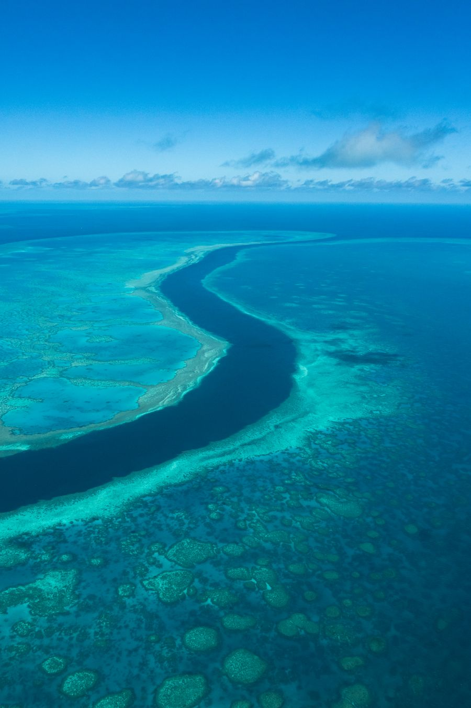
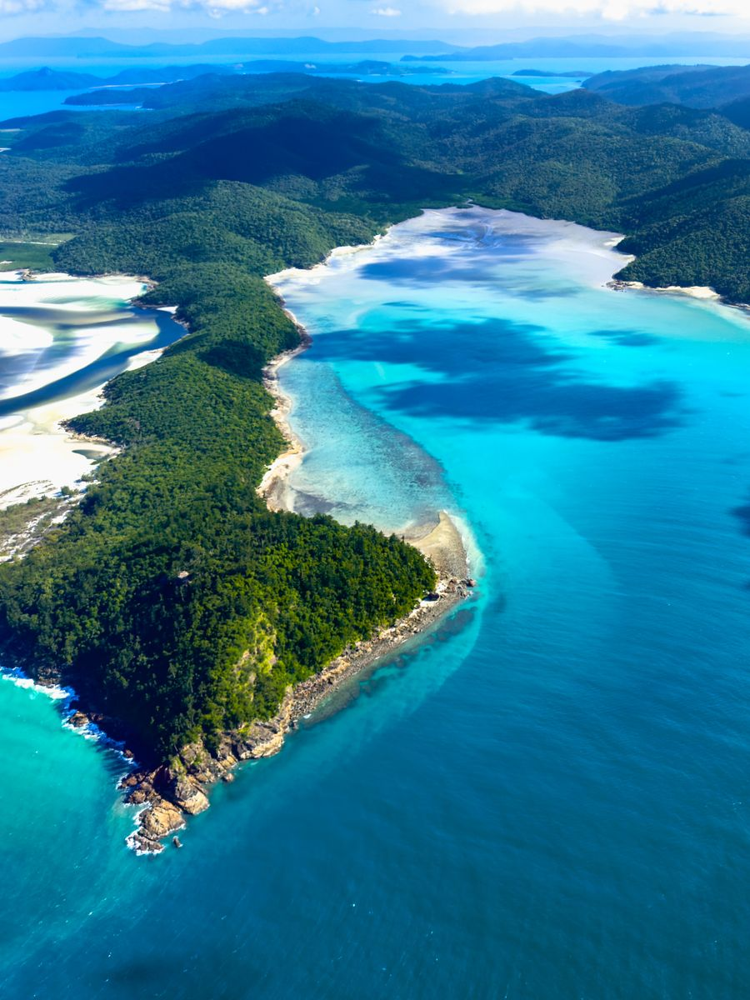
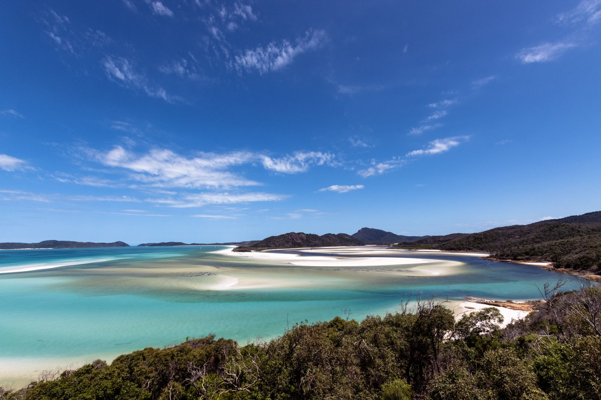

O maior organismo vivo do planeta, visto de cima em formato de coração e por dentro em cada mergulho.
Visível até do espaço, a Grande Barreira de Coral se estende por mais de dois mil quilômetros ao longo da costa nordeste da Austrália, e as ilhas Whitsunday, no seu coração, guardam a praia de areia mais fina do mundo.
Nossa curadoria combina embarcação privativa entre as setenta e quatro ilhas do arquipélago com voos panorâmicos sobre o recife, incluindo o famoso Heart Reef, formação de coral em formato de coração visível apenas do ar.
Um pequeno hidroavião sobrevoa o arquipélago até a formação de coral que naturalmente desenha um coração perfeito na água turquesa. É uma das imagens mais compartilhadas da Austrália e só existe de fato para quem vê do ar, algo que fazemos logo na chegada, com luz da manhã.
A areia de Whitehaven é composta por noventa e oito por cento de sílica pura, o que a mantém branca e fria mesmo sob sol forte, e cria um efeito visual de água em múltiplos tons de azul impossível de fotografar sem parecer editado. Chegamos de barco privativo, antes dos passeios coletivos do dia.
Ao contrário do que muitos pensam, os melhores pontos de mergulho ficam no recife externo, mais distante da costa, com água mais clara e vida marinha mais densa. Saídas privativas de catamarã levam a esses pontos com equipamento completo e instrutor dedicado, incluindo opção de mergulho noturno para quem já tem experiência.
Passar uma ou duas noites navegando entre as ilhas Whitsunday, ancorado em baías desertas ao entardecer, é a forma mais completa de sentir a escala do arquipélago. Encerramos com jantar no convés, sob um céu sem poluição luminosa, tão estrelado quanto o do interior do continente.


